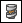

Construct a helical protrusion or cutout in the ordered environment
-
Choose Home tab→Solids group, and then click one of the following:
-
Helical Protrusion
-
Helical Cutout

-
-
Do one of the following:
-
If you want to draw a profile for the cross section, select a planar face or reference plane.
-
If you want to select a profile for the cross section from a sketch, on the command bar, on the Create-From Options list, click the Select From Sketch option. This option is not available if there are no sketches in the document.
Note:You can also right-click a region and select the command from the ribbon or the context toolbar.
-
-
Draw or select a closed profile and define an axis of rotation.
-
Click the axis to specify the start end of the helix axis.
-
Define the parameters for the helical path and click the Next button.
Note:You can define the helical path based on (a) axis length and pitch, (b) axis length and number of turns, or (c) pitch and number or turns.
-
Define the extent of the material you want to add or remove and click the Preview button.
-
Finish the feature.
-
You can place the cross section profile perpendicular to the helix axis. To do this, on the command bar, click the Helix Options button, and then on the Helix Options dialog box, click the Perpendicular option. If you choose this option, the steps displayed on the command bar will change.
-
When constructing helical features in a synchronous part document, you cannot draw sketch elements within the context of the command. You must draw the sketch elements before starting the Helix command.
How do I
Construct a helical protrusion in the synchronous environmentConstruct a helical cutout
Move or edit a helix
Learn more
Constructing helical featuresLook up more details
Helical Protrusion commandHelical Cutout command
Helical Cutout/Protrusion command bar
Helical command bar
Helix Options dialog box (synchronous environment)
Helix Options dialog box (ordered environment)